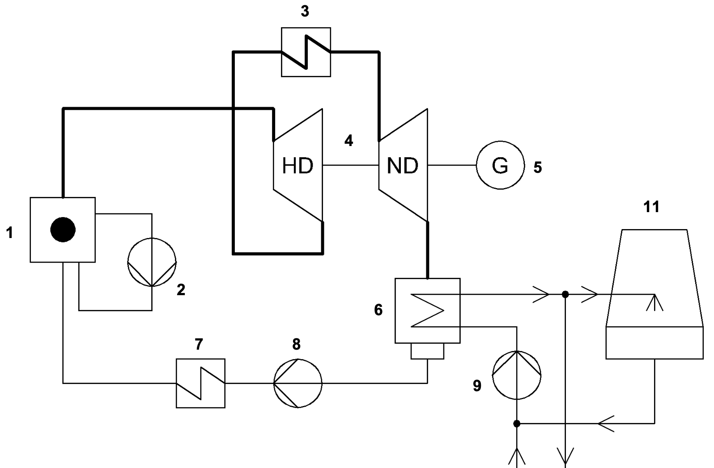
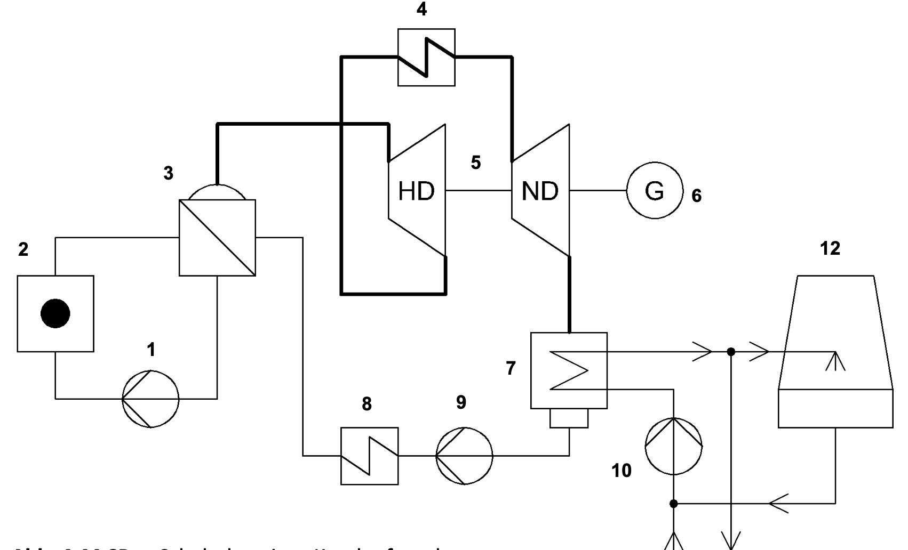

Kernkraftwerke
Kernenergie
Als Kernenergie bezeichnet man die Ausbeutung der Energie, durch
Kernspaltung, die in den Atomkernen besteht. Diese Energienutzung ist
neu und gibt es erst seit den Jahren.
Jedoch
war anfangs keine friedliche Nutzung vorgesehen sondern die Nutzung in
der Atombombe.
Kernspaltung, Kernfission
Im Jahre entdeckten die Physiker Otto Hahn und Fritz Strassmann die Kernspaltung
Funktionsweise
Beschieβt man einen Uran $\ce{^235U}$-Kern mit einem Neutron, so bildet sich ein zwischen Kern der dann zerfällt und in zwei Kerne spaltet. Dabei werden 2 bis 3 Neutronen freigesetzt.

Bei dieser Spaltreaktion werden pro gespalteter Kern etwa $200 MeV = 3 \cdot 10^{-11}J$ freigesetzt.
Kettenreaktion
Um groβe Mengen an $\ce{^235U}$ Spalten zu können gebraucht man
sich der Kettenreaktion. Da pro Spaltung 2 bis 3 Neutronen freigesetzt
werden bildet sich eine Kettenreaktion.
Die Kettenreaktion erlaubt es groβe Mengen an Energie freizusetzen.
Vermehrungsfaktor
Die Kettenreaktion zieht jedoch mit sich, dass die Reaktion lawinenartig anwächst. Um das technisch zu beschreiben definiert man den Vermehrungsfaktor $k$.
Formel
$$ k = \frac{Anzahl\ der\ nachfolgenden\ Spaltungen}{Anzahl\ der\ vorherigen\ Spaltungen} $$Vermehrungsfaktor |
Zustand |
Beispiel |
Bezeichnung |
|---|---|---|---|
$k < 1$ |
Die Anzahl an Spaltungen nimmt ab |
Herunterfahren des Reaktors |
unterkritisch |
$k = 1$ |
Die Anzahl an Spaltungen bleibt konstant |
stationärer Betrieb des Reaktors |
kritisch |
$k > 1$ |
Die Anzahl an Spaltungen nimmt zu |
Hochfahren des Reaktors |
überkritisch |
Stationärer Betrieb
Um den stationären Betrieb des Reaktor aufrechtzuerhalten muss eine
mindest Menge, genannt kritische Masse, an Spaltstoff vorhanden sein.
Wird die kritische Masse überschritten, so verlassen zu viele Neutronen
den Spaltstoff ohne eine Spaltung zu bewirken. Dies kann verhindert
werden mit Neutronenreflektoren der die Neutronen wieder ins
Spaltprodukt reflektiert.
Wechselwirkung zwischen Neutron und Kern
Wenn ein Neutron auf ein Atomkern trifft so gibt es 3 verschiedene
Möglichkeiten wie sie mit einander reagieren können. Diese sind
Spaltung, Streuung, Absorption.
Alle genannten Reaktionen sind möglich, sie hängen also von der
statistischen Wahrscheinlichkeit der Reaktion ab, und das unabhängig von
der Geschwindigkeit der Neutronen.
Bemerkung
Thermische Neutronen sind langsame Neutronen.
|
Bezeichnung |
Neutrongeschwindigkeit |
|---|---|
schnelle Neutronen |
$>10^7 \frac{m}{s}$ |
mittelschnelle Neutronen |
$>10^5 \frac{m}{s}$ bis $>10^7 \frac{m}{s}$ |
langsame Neutronen |
$>10^5 \frac{m}{s}$ |
-
Spaltung
Man unterscheidet zwischen:
-
Kerne mit gerader Massenanzahl
Ein Neutron kann ein Kern mit gerader Massenzahl spalten, wenn das Neutron ein schnelles Neutron ist.
-
Kerne mit ungerader Massenanzahl
Hier kann auch ein langsames Neutron den Kern spalten.
Wobei schnelle Neutronen auch den Kern Spalten können ist das viel unwahrscheinlicher und werden daher nicht benutzt.
-
-
Streuung
Die Streuung ist der Stoβvorgang zwischen den Neutronen und den Kernen. Hierbei wird das Neutron nach dem Stoβvorgang abgelenkt und es verliert Energie an den Atomkern. Da hierbei das Neutron an Geschwindigkeit verliert werden die schnellen Neutronen zu thermischen Neutronen. Man spricht hierbei auch von einem Bremsvorgang der Neutronen.
-
Absorbtion
Absorbtion ist wenn der Atomkern das Neutron einfängt, es gilt:
$$ \ce{^1_0n^0 + ^A_ZK -> ^{A+1}_ZK} $$Da der Kern ein Neutron eingefangen hat ist er radioaktiv. Er sendet $\gamma$-Strahlung aus.
Moderator, Moderation
Stoffe die die Streuung begünstigen heiβen Moderatoren, sie machen
Moderation. Sie bremsen also schnelle Neutronen auf langsame Neutronen
ab.
Oft werden folgende Stoffe verwendet: schweres Wasser, Wasser,
Beryllium, Grafit.
Neutronen einfangen
Stoffe die Neutronen einfangen sind einerseits in den Reaktorstäben
enthalten; wo sie erwünscht sind, und auch in den Spaltprodukten hier
bezeichnet man sie als Reaktorgifte.
Wenn der Reaktor gebaut wird müssen jedoch Stoffe eingesetzt werden die
keine Tendenz haben Neutronen einzufangen diese heiβen
Strukturmaterialien.
Sie haben ebenfalls einen Einfluss auf den Vermehrungsfaktor. Gibt es
mehr Reaktorgifte so sinkt der Vermehrungsfaktor $k < 1$ gibt es weniger
so steigt der Vermehrungsfaktor $k > 1$
Kernbrennstoffe
Geeignete Kernbrennstoffe müssen aus schweren Kernen bestehen, wobei : $A > 200$. Hierfür eignet sich technisch bis jetzt nur $\ce{^235U}$.
Bemerkung
Der Name Kernbrennstoffe kommt daher dass in anderen Kraftwerken oft etwas verbrannt wird. Das ist jedoch beim Kernkraftwerk nicht der Fall.
Gewinnung von U-235
Das Natürlich vorkommende Uran besteht aus:
-
0,7%: $\ce{^{235}U}$
Das $\ce{^{235}U}$ ist das gewollte spaltbare Uran
-
99,3%: $\ce{^{238}U}$
Das $\ce{^{238}U}$ ist das ungewollte nicht groβtechnisch spaltbare Uran
Diese Mischung an Uran ist gleichmäβig über alle Kontinente verteilt, jedoch in sehr geringen Mengen. Was Uran sehr teuer macht und durch die geringen Mengen an Uran in 1t Erz, etwa 7g, noch teurer. Die geringen Mengen und die kosten sind groβe Faktoren bei den neuen Kernkraftwerken. Es ist nicht sicher gestellt op genug und kostengünstiges Uran zu betrieb vorhanden ist.
Brennelement, Brennstoff, Brennstab
In einem Reaktor sind Brennstäbe eingebaut. Sie sind lange rohrförmige
Stäbe. In diesen laufen die Spaltreaktion statt. Man füllt sie mit
Pellets oder Brennstofftabletten auf. Diese bestehen aus
Urandioxidpulver was in Tabletten gepresst wurde. Dabei muss beachtet
werden, dass zwischen dem Brennstoff genügend Platz vorhanden damit
entstehende Gase genügend Platz haben.
In einem Reaktor werden mehrere dieser Brennstäbe mit einem
Abstandshalter zusammengefasst. Das fertige Produkt bezeichnet man als
Brennelement.
Ein Brennstoff dürfen nicht in Kontakt geraten, deshalb werden sie in
Tabletten gepresst und in dem Brennstab eingeschlossen. Ein Kontakt von
Brennstoff und Kühlmittel nennt man Kontamination.
Bemerkung
Bei einem Unfall könnte man pulverförmiges Urandioxid nicht so leicht bergen als Tabletten von Urandioxid.
Leichtwasserreaktoren, LWR
Ein Leichtwasserreaktor ist eine Art von Reaktor. Zu dieser Art gehören
Siedewasserreaktor und Druckwasserreaktor.
Aufbau
Ein Leichtwasserreaktor besteht aus einem Reaktorgefäβ, einem Brennelement, leichtem Wasser und Regelstäbe.
Funktionsweise
Im Reaktorgefäβ befindet sich Wasser, im Wasser ist das Brennelement. Das Wasser fungiert hierbei als Kühlmittel und als Moderator. Die Regelstäbe können rein und raus bewegt werden um die Spaltgeschwindigkeit zu regulieren. Sind die Regelstäbe näher an den Brennstäben so geschehen weniger Zerfälle pro Zeiteinheit, sind sie weiter entfernt so steigt die Anzahl an Zerfällen.
Regelstäbe
Ein Regelstab hat zur Aufgabe den Vermehrungsfaktor $k$ zu regulieren. Regelstäbe bestehen aus Stoffen die die Eigenschaft haben Neutronen einzufangen, somit verändern sie kontrolliert die Spaltgeschwindigkeit.
Selbststabilisierung
Leichtwasserreaktor sind selbst stabilisierend, das Bedeutet, dass eine
unkontrollierbare Kettenreaktion wie bei einer Atombombe physikalisch
unmöglich ist.
Steigt die Spaltaktivität schnell an so wird ebenfalls mehr Wärme
produziert. Diese flieβt in das Kühlmittel und erwärmt ihn. Das
Wasser erhöht also seine Temperatur, seine Dichte nimmt damit ab, und
damit auch seine Moderatorwirkung. Dies bewirkt nun, dass die schnellen
Neutronen nicht mehr auf thermische Neutronen abgebremst werden können
und somit die Reaktion an Geschwindigkeit abnimmt. Die Reaktion kommt
zum stoppen.
Siedewasserreaktor, SWR
Schaltplan
Aufbau
Siedewasserreaktoren besitzen einen Kreislauf.
Funktionsweise
Bei einem Siedewasserreaktor ist der Reaktor zu $\frac{2}{3}$ mit Wasser gefüllt. Das erlaubt dem Wasser, unter der Wärme des Brennelements, zu sieden, daher der Name. Der Wasserdampf wird anschlieβend getrocknet und flieβt dann zu den Turbinen. Nach den Turbinen kondensiert der Wasserdampf wieder zu Wasser, durchgeht einen Kondensator und wird dann wieder in den Reaktor zurückgepumpt.
Schutzmaβnahmen
Da das Wasser den stark radioaktiven Reaktor durchläuft ist es ebenfalls stark radioaktiv und muss somit Abgeschirmt werden um Kontamination zu vermeiden. Das Maschinenhaus der Turbinen sowie Pumpen, Reaktor und alles weitere was mit dem Wasser in Kontakt gerät muss Abgeschirmt werden, dass keine Strahlung heraus gelangen kann.
Druckwasserreaktor, DWR
Schaltplan
Aufbau
Druckwasserreaktoren besitzen 2 Kreisläufe.
Funktionsweise
Der Primärkreislauf transportiert die Wärme die im Reaktor entsteht zu
einem Dampferzeuger. Das geschieht ohne, dass das Wasser dabei
Aggregatzustand ändert; es bleibt flüssig.
Im Sekundärkreislauf wird das flüssige Wasser im Dampferzeuger zum
sieden gebracht. Der Dampf flieβt, dann zu der Hochdruckturbine und
anschlieβend zum Überhitzer und dann zur Niederdruchturbine.
Schutzmaβnahmen
Bei dem Druckwasserreaktor gibt es den Vorteil, dass es mehrere Kreisläufe gibt, was bewirkt, dass die Strahlung besser abgeschirmt ist.
Barrierenkonzept
Das Barrierenkonzept ist die Methode die Umwelt von den radioaktiven
Stoffen frei zu halten.
Verschiedene Barrieren schützten von verschiedenen Arten von
Kontamination beispielsweise durch auslaufen des stark radioaktiven
Wassers, oder das Durchdringen der Strahlung, sowie der Austritt der
Brennstoffe. Es gibt folgende Barrieren von ganz innen nach aussen:
-
Der Brennstoff wird in Brennstofftabletten gepresst.
Verhindert den Stoffausbruch. -
Der Brennstoff wird in Brennstäbe gepackt.
Verhindert den Stoffausbruch. -
Das Brennelement wird in den Reaktordruckbehälter eingebaut.
Verhindert den Wasserauslauf. -
Der Reaktordruckbehälter wird in eine Betonabschirmung eingebaut.
Verhindert, dass Strahlen entkommen. -
Die Betonabschirmung wird in ein Sicherheitsbehälter eingebaut.
Verhindert den Wasserauslauf. -
Der Sicherheitsbehälter wird in eine zweite Stahlbetonhülle eingebaut.
Verhindert, dass Strahlen entkommen.
GAU
GAU steht für: Gröβt anzunehmender Unfall.
GAU bei LWR
Der Gröβt anzunehmender Unfall bei einem Leichtwasserreaktor ist die Kernschmelze. Der Brennstoff würde sich so stark aufheizen, bis zum Beispiel einem Rohrbruch im Kühlsystem, dass es zur Kernschmelze käme. Da eine Kettenreaktion ausgeschlossen ist durch die Selbststabilisierung, würde der Reaktor sich so stark erhitzen, dass er sich möglicherweise durch alle Barrieren durchschmelzen würde. Somit gelängen die radioaktiven Spaltprodukte in die Umwelt.
Sicherheitsmaβnahmen
Die Sicherheitsmaβnahmen sollen die Wahrscheinlichkeit, dass ein GAU vorkommt verringern. Sie sind:
-
Redundanz
Redundanz bedeutet, dass wichtige System mehrfach vorhanden sind. Dies ist wichtig, fällt nun ein kritisches System aus, kommt es nicht sofort zu GAU.
-
Diversität
Die mehrfach vorhandenen Systeme müssen auch unterschiedliche funktionsweisen haben beispielsweise eine andere Energieversorgung, von Strom auf Kraftstoffe.
-
Räumliche Trennung
Wichtige Systeme sollten ebenfalls in verschieden Räumen vorhanden sein, so dass sie von äuβeren Faktoren geschützt sind beispielsweise Explosionen.
Entsorgung
Bei der Reaktion im Brennstab, werden auch Reaktorgifte produziert.
Deshalb muss vor dem, dass das Ganze Uran gespalten ist schon der
Brennstab entsorgt werden.
Die bei der Spaltung von Uran entstandenen Stoffe sind stark radioaktiv
jedoch haben diese eine kurze Halbwertszeit. Sie werden deshalb in ein
sogenanntes Abklingbecken zwischengelagert. Das Abklingbecken ist mit
Wassergefüllt.
Wiederaufbereitung
Da Uran nicht wieder erzeugt werden kann und dessen Gewinnung nur teurer wird. Muss das noch brauchbare $\ce{^235U}$ wieder aufbereitet werden. Wiederaufbereitung ist also das brauchbare Uran aus den Brennstäben in neue Brennstäbe zu recyclen.
WAA
WAA, steht für Wiederaufbereitungsanlage. Sie arbeiten mit dem sogenannten PUREX-Verfahren.
PUREX-Verfahren
PUREX steht für: Plutonium-Uranium-Recovery by Extraction. Das PUREX-Verfahren besteht aus folgenden Schritten:
-
Die Brennstäbe werden in etwa 5 $cm$ groβe lange Stücke zerschnitten. Dann werden sie in konzentrierte Salpetersäure gelegt, das löst den Inhalt der Brennstäbe in der Lösung auf.
-
Das Uran und Plutonium werden aus der Lösung getrennt.
Die anderen stark radioaktiven Spaltprodukte werden verfestigt, in Glas eingeschmolzen, wiederrum in Edelstahlzylinder eingeschmolzen.
Die mittelstarken Spaltprodukte werden in Beton ummantelt. -
Uran und Plutonium werden anschlieβend von einander getrennt und so aufbereitet, dass es in der Brennelementfertigung weiterverarbeitet werden kann.
Endlagerung
Die Spaltprodukte mit einer sehr groβen Halbwertszeit und die stark
radioaktiv sind müssen für sehr lange Zeit gelagert werden, man spricht
von Endlagerung.
Schwach radioaktive oder mittelstarke radioaktive Abfälle werden oft nur
in stillgelegten Bergwerken gelagert.
Um einen geeigneten Standort zu finden um die stark radioaktiven
Spaltprodukte endlagern zu können müssen folgende Bedingungen erfüllt
sein:
-
geologische Stabilität
-
keine Verbindung zum Grundwasser
-
ausreichende Tiefe
-
gute Wärmeleitfähigkeit